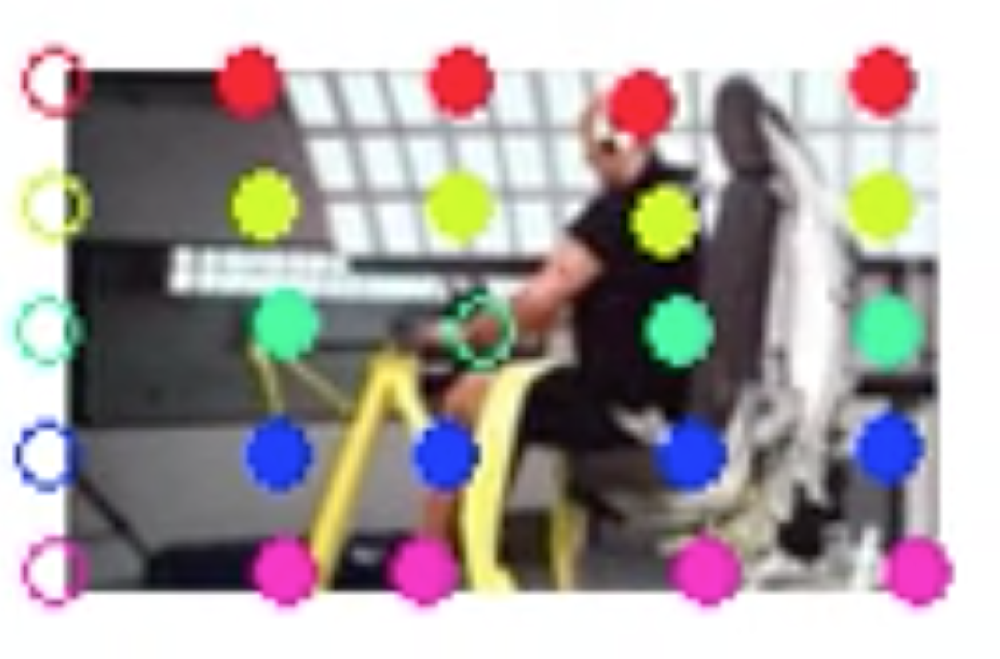
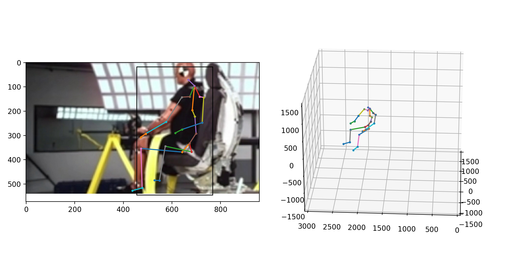

POSER
Positional Observational Skelton Extraction Review System (POSER)
Advanced visual analysis extracting ATD movement data from crash test videos
Temporal and Spacial analysis
Crash Test Analysis and Crash Simulation Validation
Temporal
Pixel accurate time tracking 
Target Track
Accurate pixel by pixel tracking
Skeleton
Full 3D skelton extraction 
ATD representation
AFull 3 dimeinal ATD representation for post processing

User Interface
Canvas interface for extended data exploration